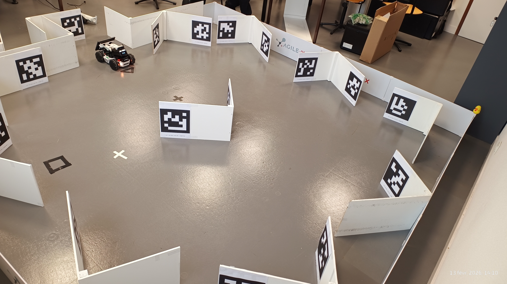
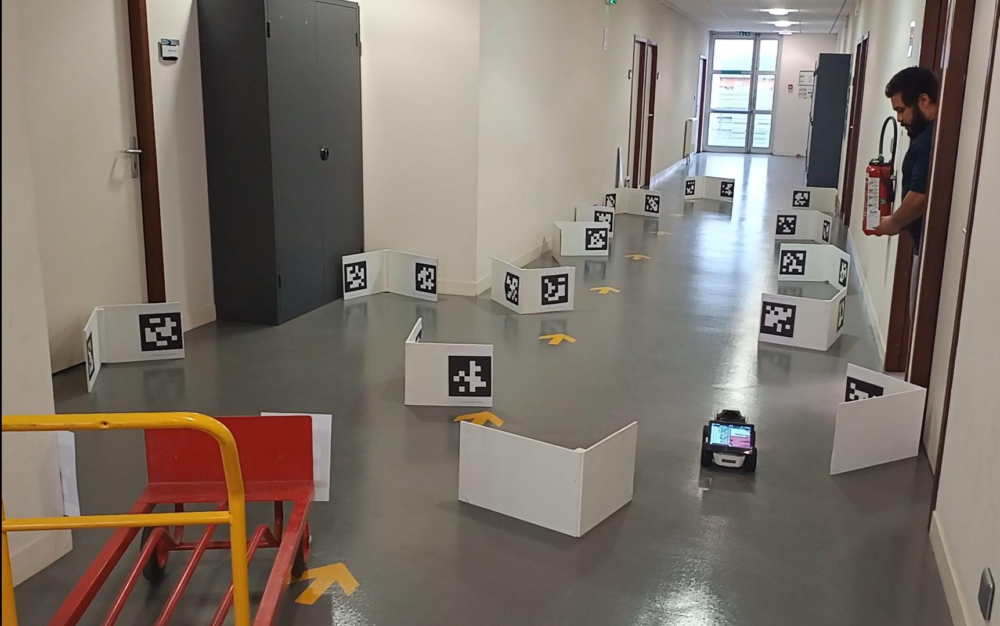

Scenario View

Practical assignment workflow, record a trajectory, rebuild and optimization references offline, and evaluate relocalization with distance and heading metrics.
Organized by real-robot scenarios and simulation validation (walls AprilTag SDF).








This scenario includes video evidence and trajectory outputs; no still-point photo set was captured.
Reference world: limo_ws/src/gz_apriltag_env/worlds/walls_apriltag_limo.sdf

Offline optimized trajectory, ground-truth comparison, and tag-map consistency were validated on the walls scenario.


| Metric | Value | Comment |
|---|---|---|
| Mean Distance to Path | -- m | Lower is better |
| P95 Distance | -- m | Robustness indicator |
| Mean |Heading Error| | -- deg | Orientation consistency |
Important: both real and simulation practical sessions require manual driving via joystick/teleop during the teach run.
Suggested student exercise:
Two annex simulations are provided to support the practical work:
cd limo_ws
source /opt/ros/humble/setup.bash
bash profiles/build_sim.sh
bash profiles/launch_sim_parking.shcd limo_ws
source /opt/ros/humble/setup.bash
bash profiles/build_sim.sh
bash profiles/launch_sim_tags_dataset.sh
bash profiles/launch_teleop_joy_sim.shValidation scenario file: limo_ws/src/gz_apriltag_env/worlds/walls_apriltag_limo.sdf
Students who want to study or implement additional control laws can use: PythonRobotics.
These control methods can be connected to the outputs of this pipeline (recorded trajectory and relocalization metrics).
cd limo_ws
source /opt/ros/humble/setup.bash
bash profiles/build_real.sh
# or
bash profiles/build_sim.sh